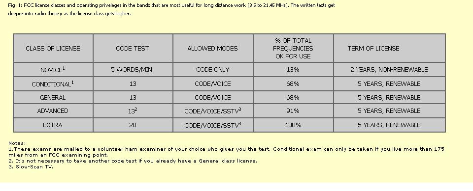
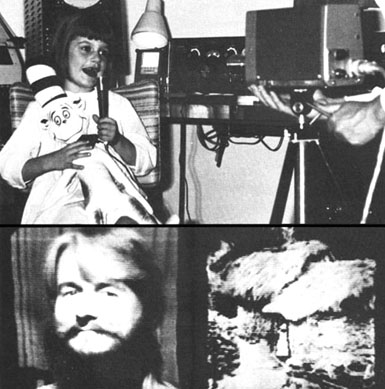

It's happening. People leaving the urban/suburban sprawl. People moving to the country. Decentralization. Going back to the land. Whatever we call it, it's starting to make life richer and fuller for a lot of us.
But this step to a more isolated way of living generates its own array of problems, too. With it comes a reduction in the number of stimulating personal contacts. Isolation from sources of information. Isolation from cultures other than the one we're trying to create. Isolation from some of the people we love. Isolation from dialogue.
Travel and the telephone are two ways of relieving these problems, but the airlines and phone company may not be among your favorite charities ... or you may just not have the bread.
Friend, be of good cheer. There is a low-cost, down-home, do-it-yourself way to COMMUNICATE!
For example, I talked with my friend George Cummings the other night for an hour. We rapped about the land he had bought in Washington State, where he's going to dig for water, and the materials with which he plans to build a house. (Fieldstone walls, but tin roof or sod?) Then we got into a discussion of wind power, and the conversation ended with George planning to investigate motorcycle generators.
Nothing magic about the conversation ... except that George was in Colorado and I was in Minnesota and we weren't spending a dollar for every three minutes of phone time. Why not? Because George has a ham radio license and so do I. That was the magic.
I only wished that my friend had also been equipped with slow-scan TV so he could have looked at some photos I took in Peru of stone houses with sod roofs (some going back to the days of the Incas). With SSTV, hams can send electronic images wherever their voices will travel. On the receiving end, it's much like watching a yellow radar screen: you can see a new picture "painted" in light every eight seconds. . . and - suddenly! - you have a visual dimension added to the audio of your amateur radio rig.
This incredibly useful tool, amateur radio, has been around for over 50 years as the toy of teen-age boys and middle-aged men ... and is quite different from citizens' band (CB) radio. CB is great for communicating up to 20 miles or so, but that's about all. Hams, on the other hand, are allowed to transmit and receive on frequency bands which make long distance transmission possible. This is due to the kind of cooperation of the mirror-like ionosphere 50 to 200 miles above the earth, which allows the hams' signals to bounce their way around the world.
The ionosphere isn't as reliable as Ma Bell, but that adds to the fun. The greater the distance, the chancier matters get. Still, scheduled contacts with friends 1,000 to 2,000 miles away or less should be possible almost every day with typical equipment. And if you're patient and wait for especially good conditions, amazing results are possible. For example, while traveling through New Zealand recently, I talked to the States several times with a small batteryoperated walkie-talkie hooked to a wire antenna thrown over a tree branch. (An advantage for country folks is that they can operate during weekday daytimes when lots of people are working and crowding of the bands is minimized.)
Although Cop Macdonald has modestly refrained from doing so in his article, it's only fair to tell you that he's known in amateur radio circles as "Mr. SSTV" because he's the guy who pioneered the whole slow-scan television idea in the first place.
Back in 1957, while still a student at the University of Kentucky, Cop decided it was technically possible for ham radio operators to transmit pictures (in addition to code and voice messages) all over the world with standard high frequency gear. During the next ten years he designed equipment, conducted tests and-with the help of other interested amateur radio freaks-lobbied hard for the idea. Finally, in 1968, the FCC gave in and changed its rules. Hams are now allowed to transmit and receive SSTV in segments of every band from 3.5 megahertz on up. Yep, one man can still change the world.
Mr. Copthorne Macdonald, it should further be noted, is far more than your average technofreak. He was not, in other words, merely content to invent a revolutionary new means of communication. Nor was he satisfied just to go the next logical step and battle the FCC until it accepted his new baby. Nor has Cop-in the good ole American way-tried to corner the market and cash in on his brainchild.
Nope. Copthorne Macdonald is a far more dangerous and subversive character than that. Why, this guy actually wants to put his "tool of change" directly into the hands of all us little folks (the ones who are beginning to have more than just a vague suspicion that the "leadership" of the world needs a good seeing eye dog) ... so that we can begin working out the planet's problems on our own.
"Imagine," says Cop, "a Montana rancher having his first 'faceto-face' rap with a New York black man through an SSTV-equipped ham radio hookup. Or think about the way it would expand your view of the world if you could directly compare your outlook on current events with the opinion of a Canadian or a New Zealander. How well does Sweden's welfare state really work? What does an Israeli think of U.S. internal problems?
"A network of SSTV hams could make really meaningful options available in the field of education," Macdonald believes. "For example, a farmer in Oregon could hold free organic gardening classes every day at noon on one particular frequency and interested individuals and groups all over the country could both watch and participate. SSTV can even be valuable in bringing issues before the public in roundtable discussions ... give and take 'town meetings' in which tens or hundreds of people around the country - or around the world - carry on an animated discussion.
"Our world is in deep trouble," says Copthorne. "There has never been a greater need for people to share their thoughts and ideas with each other. Slow-scan TV is do-it-yourself, audio-visual dialogue with each individual deciding what part of his life he wants to share. SSTV makes it easy and natural to step into another person's life ... if he wants to let us in and to share his feelings with us.
"We've got to do it. We've got to reach out and help each other. Big Business, Big Broadcasting, Big Government and Big Money damn sure aren't giving us any help. It's up to us to use every available tool to find each other and share our insights."
Whaddad I tell ya? Given just a little help, Cop Macdonald will change the world completely ... and probably for the better.-JS.
The great thing about ham radio is that it's your communication system ... and once the initial investment is made, it's darn near free. Fifteen hours of long distance calls at 33 cents a minute costs about $300. The same money can buy a good ham transceiver that will let you communicate as much as you want for the next 20 years. After the collapse of industrial society, when Ma Bell's network doesn't work anymore, your wind-powered ham rig will still keep you in touch with other foresighted individuals around the world. In the meantime we need get-togethers on the air to talk about power sources and house building and well digging and new vocations and all that other good stuff worth talking about. And friends need to keep in touch with friends.
These blessings of communication are yours for the price of some time: time spent getting far enough into the technical side of radio to pass the FCC license exam. This test - like most tests in our society - is a big filter. It has, in the past, strained out almost everyone but technofreaks ... but it doesn't have to.
America is full of people who have learned - through years of processing in our educational system - to pass examinations on almost every subject, no matter how remote from the realities of life. You are probably one of those individuals. Sure, you're trying to get away from all that - and I'm with you there - but if you can't get excited about how the hardware of broadcasting works, do a cram-for-the-test thing just once more. It's worth a little study to stake your claim to some chunks of the electromagnetic spectrum that will carry your voice (and pictures too, if you want) anywhere on earth.
The complete licensing picture is too complex to cover fully here, but Fig. I gives a rough outline of the various permit classes, operating privileges and test requirements. Learning the code is much like learning a new language that has a 40-word vocabulary. This should be done by sound only, using code-practice records or tapes, and not by memorizing dot/dash visual patterns.
How difficult is it to receive a license? I would equate getting a Novice rating with taking a snap high school or college course. Preparing for the General class exam would be like taking one relatively tough subject. It's also a trial of your self-discipline, however, since there is no instructor to demand that you perform. Fortunately, the exam setup helps. All written tests are multiple choice, and 74% is passing. If you fail you can take the quiz again after a month's wait ... and again, and again if necessary. (Nothing like taking a test once to know just how to bone up for it the second time.)
Some excellent study material is available from ARRL, the national ham organization. You'll want the License Manual ($1.00) for sure, and probably an introduction to the basics titled Understanding Amateur Radio ($2.50). The comprehensive Radio Amateur's Handbook costs $4.50 but can be found in most libraries. Prices are postpaid, direct from American Radio Relay League, Newington, Conn. 06111. ARRL also publishes a magazine, QST, at $7.50/year. For what it's worth, I write a monthly column on Slow-Scan Television for CQ magazine ($6.00/year, 14 Vanderventer Ave., Port Washington, N.Y. 11050) and code practice tapes and records are available from Radio Shack, Lafayette and other electronic outlets.
Your approach to the equipment end of ham radio will depend upon your budget and how deeply you want to dig into doing it yourself. The Heath Company of Benton Harbor, Michigan makes excellent kits. Prices run from about $70.00 for a 2-watt, lantern-battery-operated, code-only transceiver to $450 or so for a 5-band, 180-watt voice or code unit with either an AC-operated power supply or one that will work from a car battery.
Many brands of ready-to-operate commercial equipment are available at prices appreciably above Heath's, and good used amateur radio gear can usually be found at about half of new equipment prices. Not to be overlooked is the possibility of getting some of your rig free. Hams are a very friendly (if generally straight) bunch and take real pleasure in helping newcomers get started. Most amateurs have some extra gear, or parts for building, left over from earlier days. Find the radio freaks in your area ... ask around, and look for big beam antennas on backyard towers.
To those of you reading this who already have ham licenses: Let's get some information-sharing roundtables started. And let's start brainstorming some of the tough problems that haven't been solved yet. Drop me a fine with your thoughts-subjects, bands, times - and let's see what jells. My address is P.O. Box 483, Rochester, Minnesota 55901.
To those of you who aren't hams but are still reading: DO IT! Get your license ... build, buy or scrounge some equipment ... and break that isolation.
Let's get in touch and keep in touch, though the snow may drift around the cabin door and old "civilizations" crumble away.
|
 Copthorne Macdonald-amateur radio freak, inventor of the Slow- Scan Television (SSTV) concept and all-around good guy-gets it on with some of his communications equipment. |
 FAR ABOVE: Cop sends SSTV pictures of his daughter. ABOVE LEFT: Cop himself on SSTV. ABOVE RIGHT: The SSTV picture that Cop wanted to send George Cummings. |
|